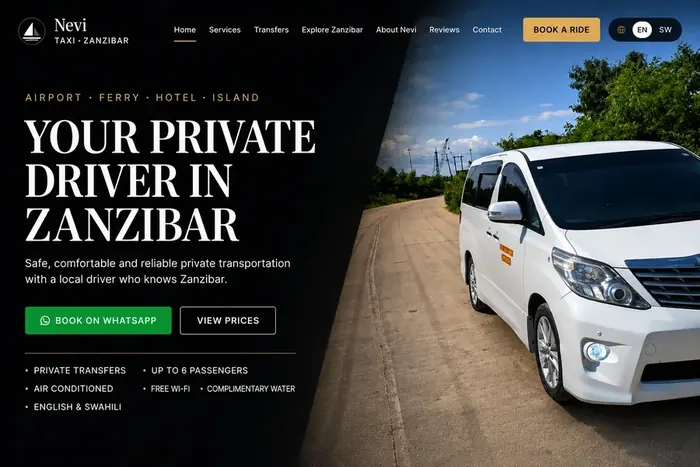
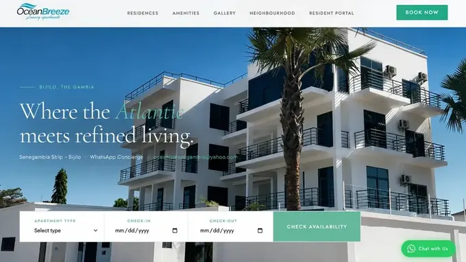
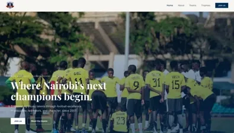
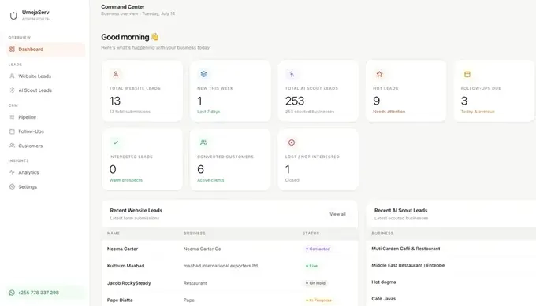

Case Study · Get Found · Keep Growing
Rumi Café
Café · Kilimani, Nairobi
An unclaimed listing marked "Temporarily closed" with three reviews — claimed, corrected, and connected to reviews, Maps, local search and a mobile website.
3 → 119Google Reviews
4.9★Google Rating
72 → 90Mobile Lighthouse Performance
207Direction Requests / Apr–Sep 2026
Google Business Profile readings: 3 reviews on 10 May 2026; 119 reviews at 4.9 stars at the latest reading on 17 October 2026, read on Google Maps. Direction requests: 207 reported by Google Business Profile for April–September 2026. Mobile performance: Google PageSpeed Insights (simulated mobile test) before and after optimisation on 25 September 2026.
Read the case study →
Featured · Full System
Resayle
Laundry & Dry Cleaning · Zanzibar & Taveta
"Before UmojaServ, coordinating pickups across three locations meant endless WhatsApp back-and-forth. Now every branch has its own dashboard, every order is tracked from pickup to delivery, and customers can check their own status."
3 branches, one dashboard — order tracking in real time
Visit Site →

Featured · WhatsApp Booking
Nevi Taxi Zanzibar
Taxi & Airport Transfers · Zanzibar
"I'm really happy and excited to see that more and more customers are booking with me. I have already completed several bookings, and so far, thankfully, no one has cancelled."
First website live — WhatsApp Business booking connected
Visit Site →

Case Study · Performance
Lash Lair
Beauty & Lash Studio · Atlanta
"Courtney Perkins told us the website, and the way her bookings are organised, felt really well thought out."
83 → 98Mobile Lighthouse Performance
1.5sFirst Contentful Paint · from 2.9s
2.2sLargest Contentful Paint · from 3.5s
2.1sSpeed Index · from 4.9s
Mobile performance: Google PageSpeed Insights (simulated mobile test) before and after optimisation on 27 September 2026. Lighthouse scores vary between runs.
Read the case study → Visit Site →
Case Study · Website & Staff Portal
Selectives Home Care
Non-medical Home Care · Maryland
65 → 100Mobile Lighthouse Performance
1.1sLargest Contentful Paint · from 18.9s
2.2sSpeed Index · from 12.1s
100Lighthouse SEO · from 83
Mobile performance: Google PageSpeed Insights (simulated mobile test) of the previous and updated websites on 28 September 2026. Lighthouse scores vary between runs.
Read the case study → Visit Site →
Client · Multi-location
Poncey Dry Cleaners
Dry Cleaning & Laundry · Atlanta
Family-owned and serving Atlanta for 15+ years — three neighbourhood locations in Poncey-Highland, Virginia-Highland and Glenwood Park, on one mobile-first site with services, directions and Google reviews.
3 Atlanta locations · one website
Visit Site →

Featured · International
Moses Kenya Safaris
Safari Operator · Kenya
"Before this, Moses had no way for people to find his business online. Now they can."
Found online for the first time
Visit Site →

Client · Transportation
ShowTime Limo
Chauffeur Service · Birmingham, Alabama
"UmojaServ created a professional online presence that showcases our fleet and makes it easy for clients to book premium transportation services."
Professional booking interface
Visit Site →

Template · Hospitality
Ocean Breeze
Coastal Vacation Rentals
"A booking site we designed as a template for vacation rentals: WhatsApp booking, a resident portal, pricing, amenities and a neighbourhood guide."
Full-featured booking system
View Template →

Pro Bono · Community
Blue Bentos FC
Youth Football Club · Nairobi, Kenya
"UmojaServ built our entire online presence as a pro bono project. For the first time, our club, our players, and our story are visible to the world."
Built for free · Community mission
Visit Site →

Pro bono · Atlanta
Echo Reconnects
AI Reception & Automation · Atlanta
"Echo Reconnects is one young man's project. We built the frontend for free and wired in the AI because we wanted to back him."
Frontend & AI integration built free
Visit Site →

Behind Every Client System
UmojaServ Command Center
Business Operating System · Internal
"The system behind every client booking page. It finds, scores and sorts potential leads before we reach out. 253 businesses tracked so far."
253 businesses scouted, scored and tracked — automatically